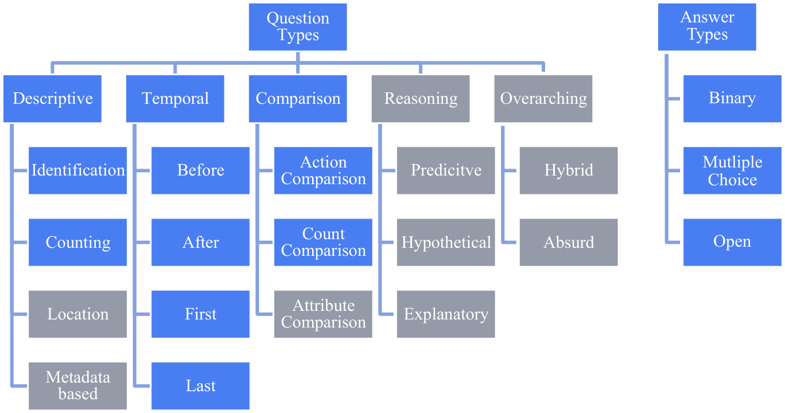
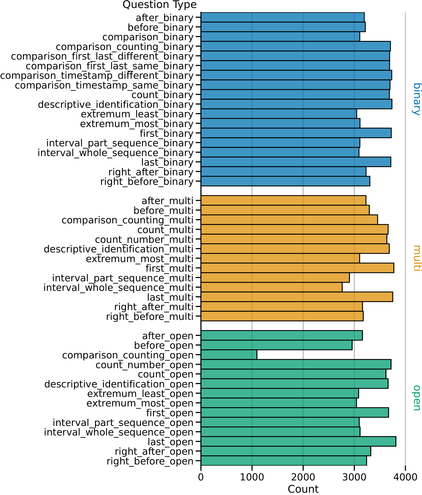
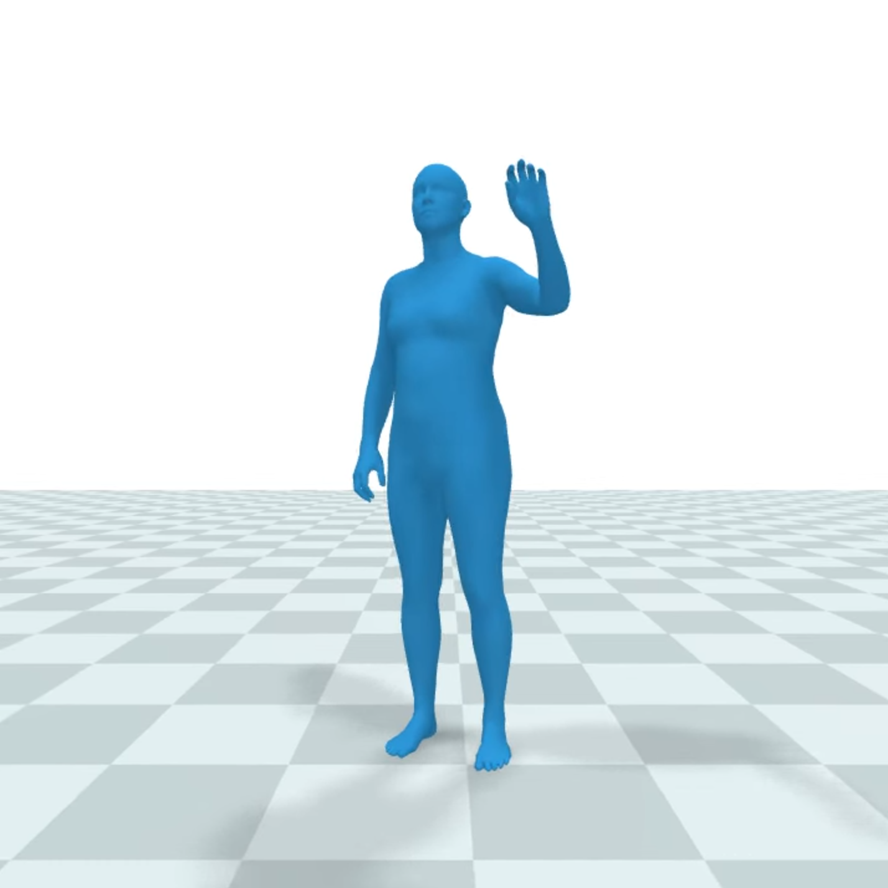
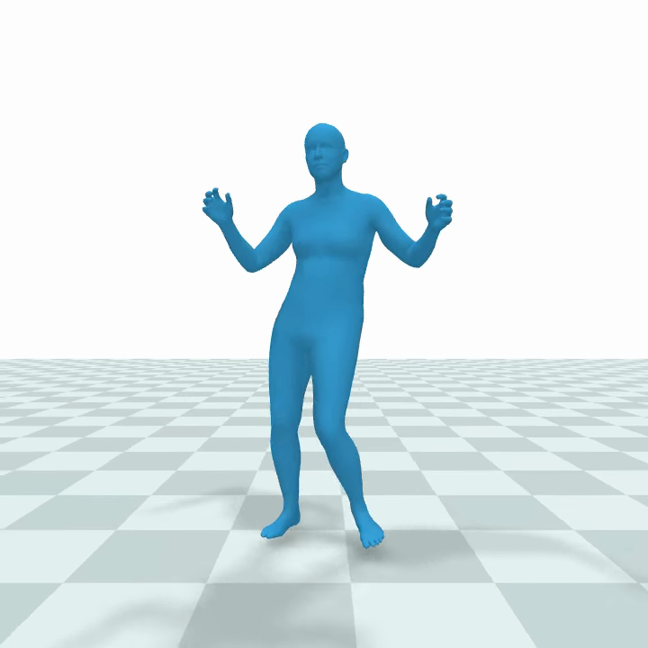
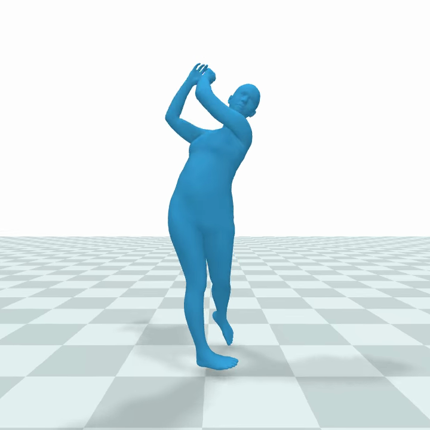
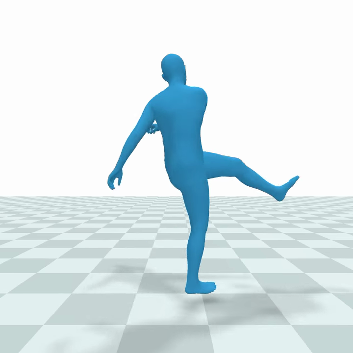
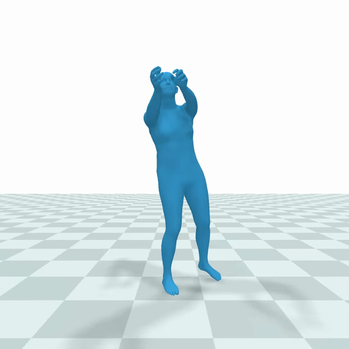
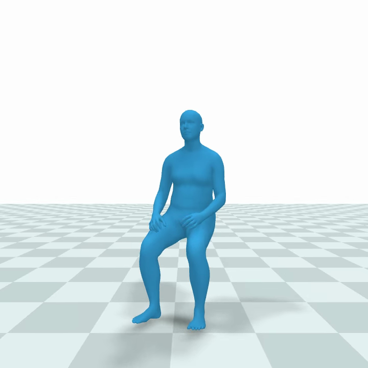
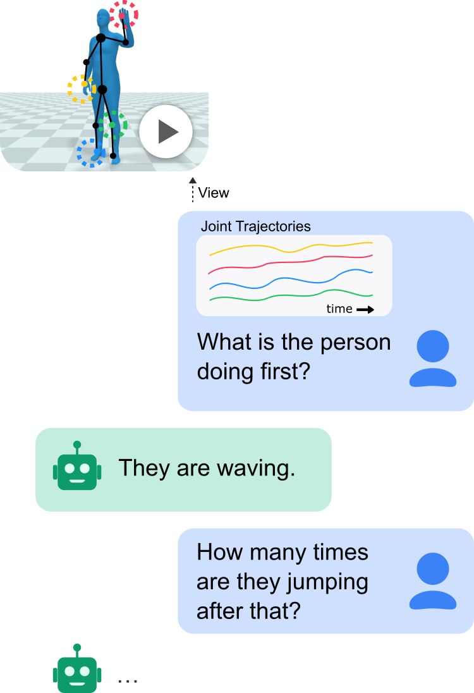

QuAnTS: Question Answering on Time Series
Abstract
Text offers intuitive access to information. This can, in particular, complement the density of numerical time series, thereby allowing improved interactions with time series models to enhance accessibility and decision-making. While the creation of question-answering datasets and models has recently seen remarkable growth, most research focuses on question answering (QA) on vision and text, with time series receiving minute attention. To bridge this gap, we propose a challenging novel time series QA (TSQA) dataset, QuAnTS, for Question Answering on Time Series data. Specifically, we pose a wide variety of questions and answers about human motion in the form of tracked skeleton trajectories. We verify that the large-scale QuAnTS dataset is well-formed and comprehensive through extensive experiments. Thoroughly evaluating existing and newly proposed baselines then lays the groundwork for a deeper exploration of TSQA using QuAnTS. Additionally, we provide human performances as a key reference for gauging the practical usability of such models. We hope to encourage future research on interacting with time series models through text, enabling better decision-making and more transparent systems.
Explore the Data
Every QuAnTS sample is a 16-second human motion trajectory of four consecutive actions, paired with five question–answer pairs. Models see the raw 320 × 24 × 3 numbers; the videos below are renderings of exactly that signal, as shown to the participants of our human study. Pick a sample from the test split:
Action sequence
- 0–4 s bowing
- 4–8 s waving
- 8–12 s picking something up with both hands
- 12–16 s picking something up with both hands
Ground-truth scene description (for debugging only)
The sequence starts with bowing from 0:0.0 to 0:4.0 (for 4.0 seconds). The person is waving. This action is starting at 0:4.0 and continues until 0:8.0, resulting in a total time of 4.0 seconds. Someone is picking something up with both hands. This is happening from 0:8.0 to 0:12.0, which means for a total time of 4.0 seconds. As a last action, the person is picking something up with both hands. This action is starting at 0:12.0 and happens until 0:16.0, meaning the engagement in this is for 4.0 seconds.
The five question–answer pairs
-
Open
After engaging in bowing, what followed immediately?
Someone is waving.
right_after_open -
Open
At 2.803, what action is the person performing?
The person is bowing.
descriptive_identification_open -
Multiple-choice
What is the person doing at 4.354? A: waving, B: bowing, or C: picking something up with both hands?
The correct answer is: waving.
descriptive_identification_multi -
Binary
Is it accurate to state that the individual repeats waving 0 times?
False
count_binary -
Open
Following the performance of bowing by the person, what actions were done later?
The subject is waving and picking something up with both hands.
after_open
Action sequence
- 0–4 s kicking a ball
- 4–8 s playing guitar
- 8–12 s eating with the right hand
- 12–16 s kicking a ball
Ground-truth scene description (for debugging only)
The person is starting off the sequence with kicking a ball. This action is starting at 0:0.0 and continues until 0:4.0, resulting in a total time of 4.0 seconds. The person is playing guitar from 0:4.0 to 0:8.0 (4.0 seconds total). The activity eating with the right hand can be observed. This action is starting at 0:8.0 and continues until 0:12.0, resulting in a total time of 4.0 seconds. The sequence finishes with kicking a ball from 0:12.0 to 0:16.0 (for 4.0 seconds).
The five question–answer pairs
-
Open
What was the last action performed by the person?
We see someone who is kicking a ball.
last_open -
Multiple-choice
How often does the person engage in skipping rope? Do they do it 1 times (Option A), 2 times (Option B), or 0 times (Option C)?
The correct answer is 0.
count_multi -
Multiple-choice
Immediately prior to eating with the right hand, what action was performed by the person? Did they perform A: catching a ball, B: playing guitar, or C: throwing a ball?
The correct answer is playing guitar.
right_before_multi -
Binary
Do eating with the right hand and kicking a ball happen with the same frequency for the person?
No
comparison_counting_binary -
Multiple-choice
Among A: sitting down, B: playing guitar and C: kicking a ball, which action has an equal number of occurrences to eating with the right hand?
The correct answer is: playing guitar.
comparison_counting_multi
Action sequence
- 0–4 s eating with the right hand
- 4–8 s bowing
- 8–12 s running
- 12–16 s bowing
Ground-truth scene description (for debugging only)
The person is starting off the sequence with eating with the right hand. This is happening from 0:0.0 to 0:4.0, which means for a total time of 4.0 seconds. The person is engaging in bowing from 0:4.0 to 0:8.0 (for 4.0 seconds). The person is running. It is starting at second 0:8.0 and continuing until 0:12.0, so the person is doing this for 4.0 seconds. Finally, the person is bowing. This action is starting at 0:12.0 and happens until 0:16.0, meaning the engagement in this is for 4.0 seconds.
The five question–answer pairs
-
Open
At 11.943, what action is the person performing?
Someone is running.
descriptive_identification_open -
Binary
Does the person take part in running 2 times?
Not true
count_binary -
Binary
Was bowing the final activity done by the person?
Yes
last_binary -
Binary
Can we confirm that the individual participated in exactly 3 activities throughout the entire sequence?
Yes
interval_whole_sequence_binary -
Binary
Is there a dissimilarity between the actions at the beginning and the end?
This is correct!
comparison_first_last_different_binary
Action sequence
- 0–4 s picking something up with both hands
- 4–8 s holding a baby
- 8–12 s sitting down
- 12–16 s sitting down
Ground-truth scene description (for debugging only)
The person is starting the sequence with picking something up with both hands at timestamp 0:0.0 and ending at 0:4.0, resulting in a total time of 4.0 seconds. The activity is holding a baby from 0:4.0 to 0:8.0 (for 4.0 seconds). The subject is sitting down from 0:8.0 to 0:12.0 (4.0 seconds total). The sequence finishes with sitting down. It is starting at second 0:12.0 and continuing until 0:16.0, so the person is doing this for 4.0 seconds.
The five question–answer pairs
-
Binary
Was jumping once the most commonly undertaken action by the person throughout the sequence?
False
extremum_most_binary -
Open
After the person performed holding a baby, what ensued directly?
We see someone who is sitting down.
right_after_open -
Multiple-choice
Some time before a person was sitting down, was it A: eating with the right hand, B: picking something up with both hands, or C: running?
The correct answer is: picking something up with both hands.
before_multi -
Binary
Are the first and last actions alike?
False
comparison_first_last_same_binary -
Binary
Was holding a baby observed as a subsequent action for the person some time after picking something up with both hands?
Yes
after_binary
Action sequence
- 0–4 s bowing
- 4–8 s running
- 8–12 s sitting down
- 12–16 s holding a baby
Ground-truth scene description (for debugging only)
The activity bowing is the first action done by the person from 0:0.0 to 0:4.0 (4.0 seconds total). The person is engaging in running. This action is starting at 0:4.0 and happens until 0:8.0, meaning the engagement in this is for 4.0 seconds. The subject is sitting down. It is starting at second 0:8.0 and continuing until 0:12.0, so the person is doing this for 4.0 seconds. The last movement the person is doing is holding a baby from 0:12.0 to 0:16.0 (4.0 seconds total).
The five question–answer pairs
-
Multiple-choice
Throughout the duration from 5.579 to 10.231, how many distinct behaviors is the person engaged in? A: 3, B: 2, C: 4
The correct answer is 2.
interval_part_sequence_multi -
Binary
Can we state that the initial and final actions are an exact match?
No
comparison_first_last_same_binary -
Multiple-choice
What action can be observed right before the person was holding a baby? Did they perform A: T-posing, B: punching, or C: sitting down?
The correct answer is sitting down.
right_before_multi -
Binary
After being involved in running, did the person transition to sitting down at some later point?
This is true!
after_binary -
Binary
Did the person end with bowing as the final action?
This is not true.
last_binary
Action sequence
- 0–4 s skipping rope
- 4–8 s skipping rope
- 8–12 s waving
- 12–16 s holding a baby
Ground-truth scene description (for debugging only)
The person is starting off the sequence with skipping rope from 0:0.0 to 0:4.0 (for 4.0 seconds). The person is performing skipping rope from 0:4.0 to 0:8.0 (4.0 seconds total). The subject is waving. It is starting at second 0:8.0 and continuing until 0:12.0, so the person is doing this for 4.0 seconds. As the last action, the person is performing holding a baby at timestamp 0:12.0 and ending at 0:16.0, resulting in a total time of 4.0 seconds.
The five question–answer pairs
-
Multiple-choice
What did the person do immediately after waving? Was it A: holding a baby, B: throwing a ball, or C: running?
The correct answer is: holding a baby.
right_after_multi -
Multiple-choice
How often does the person engage in throwing a ball? Do they do it 0 times (Option A), 1 times (Option B), or 2 times (Option C)?
The correct answer is 0.
count_multi -
Binary
Was skipping rope the action that happened most often for the person in the given sequence?
This is correct!
extremum_most_binary -
Binary
Was holding a baby the final action undertaken by the person?
True
last_binary -
Open
How many different actions does the person perform throughout the complete sequence?
3
interval_whole_sequence_open
The Dataset at a Glance
The predefined splits hold 120,000 (80 %) training, 15,000 (10 %) validation, and 15,000 (10 %) test samples. All five QA pairs of a context trajectory land in the same split, so no motion leaks across them. By answer type, QuAnTS holds 61,804 binary, 43,599 multiple-choice, and 44,597 open-ended pairs, of which 125,726 QA pairs and 100,568 questions are unique. Beyond the question, answer, and trajectory, each sample carries its question and answer type, the ground-truth action sequence, and a textual scene description for debugging and diagnostics.

The hierarchy of question and answer types we identified. The blue types are the most fundamental to time series QA and are therefore included in QuAnTS. The gray ones are left for future extensions — the blue ones alone already make for a very challenging dataset.

A balanced mix, by construction
Question types are sampled explicitly rather than harvested, so all 45 of them occur at comparable
frequency. Only a few categories, such as comparison_counting_open, are rarer because they can
only be posed when the action sequence permits a non-trivial answer.
Diversity is enforced on every axis: 10–20 hand-reviewed templates per question type, LLM-assisted paraphrasing, randomized answer positions, and organic variation from the motion diffusion. Not a single trajectory is duplicated, and under a soft equality on the signal level the effective sample size stays above 99 %.
Nineteen clearly discernible actions






playing guitar · punching · running · jumping once · drinking with the left hand · bowing · throwing a ball · shaking hands · skipping rope · picking something up with both hands · dancing · eating with the right hand · waving · catching a ball · kicking a ball · sitting down · golfing (swinging a club) · T-posing · holding a baby
How QuAnTS Is Built
Questions are generated, not annotated. We first sample a sequence of four actions, then draw five question and answer types for it, and finally instantiate each from one of many manually reviewed templates. Defining the question types up front keeps the distribution balanced and makes it possible to inspect a model's performance per subtask.
The matching time series comes from a human motion diffusion model, Spatio-Temporal Motion Collage (STMC), conditioned on the very action sequence the questions are about. Four prompts of four seconds each are blended into one fluent 16-second motion at 20 fps, yielding three spatial coordinates for each of the 24 SMPL joints — a 320 × 24 × 3 multivariate time series. Generating rather than reusing recordings lets us ask precisely the questions we want, and gives multiple organic variations of the same action.
For evaluation, binary and multiple-choice answers are scored with accuracy and macro-averaged precision, recall, and F1; unparseable responses count as wrong. Open answers are scored with ROUGE and METEOR plus an LLM judge on a 1–3 scale normalized to [0, 1]. We validated the judge against human ratings on 200 samples and settled on Qwen3 8B, which reaches a Pearson correlation of 0.912 and deviates by 7.45 % on average.

Where this is going. Text offers a highly intuitive medium to interact with otherwise opaque multivariate time series.
Key Results
Given ground-truth scene descriptions, a finetuned Llama 3.1 8B answers QuAnTS almost perfectly (99.12 % F1 binary, 99.98 % multi, 0.9434 LLM judge) — the dataset is logically consistent and answerable. Neither the question alone nor the time series alone gets anywhere near that, so there are no shortcuts to exploit. Humans solve the closed formats well, while a general-purpose LLM on serialized values and the purpose-built ChatTS both hover around chance. Only xQA, which is handed structured action labels, reaches human level.
| Split | System | Accuracy ↑ | Precision ↑ | Recall ↑ | F1 ↑ |
|---|---|---|---|---|---|
| Binary | Ablation: Only Question | 55.22 % | 57.53 % | 45.35 % | 50.72 % |
| Ablation: Only Time Series | 49.80 % | 50.58 % | 51.79 % | 51.18 % | |
| Humans (n = 840) | 77.50 % | 81.08 % | 74.66 % | 77.74 % | |
| Naive: TS + Question | 48.49 % | 48.79 % | 28.00 % | 35.58 % | |
| ChatTS | 51.69 % | 55.38 % | 25.36 % | 34.79 % | |
| xQA-Llama on GT | 79.44 % | 84.91 % | 72.42 % | 78.17 % | |
| xQA-Qwen on GT | 80.92 % | 92.28 % | 68.14 % | 78.39 % | |
| xQA-Llama on AE | 79.46 % | 84.60 % | 72.84 % | 78.28 % | |
| xQA-Qwen on AE | 81.00 % | 92.52 % | 68.10 % | 78.46 % | |
| Multi | Ablation: Only Question | 64.47 % | 64.47 % | 64.47 % | 64.38 % |
| Ablation: Only Time Series | 0.28 % | 0.28 % | 0.28 % | 0.28 % | |
| Humans (n = 820) | 86.59 % | 86.55 % | 86.61 % | 86.54 % | |
| Naive: TS + Question | 9.69 % | 9.69 % | 9.69 % | 9.62 % | |
| ChatTS | 30.40 % | 30.13 % | 30.58 % | 29.12 % | |
| xQA-Llama on GT | 81.50 % | 81.64 % | 81.51 % | 81.50 % | |
| xQA-Qwen on GT | 88.01 % | 88.04 % | 88.03 % | 88.01 % | |
| xQA-Llama on AE | 81.18 % | 81.30 % | 81.19 % | 81.18 % | |
| xQA-Qwen on AE | 87.97 % | 87.99 % | 87.98 % | 87.97 % |
| System | ROUGE ↑ | METEOR ↑ | LLMJudge ↑ |
|---|---|---|---|
| Ablation: Only Question | 0.2053 | 0.2436 | 0.6021 |
| Ablation: Only Time Series | 0.0274 | 0.0154 | 0.0173 |
| Humans (n = 440) | 0.0953 | 0.2635 | 0.6148 |
| Naive: TS + Question | 0.0603 | 0.0576 | 0.0460 |
| ChatTS | 0.0455 | 0.1060 | 0.0702 |
| xQA-Llama on GT | 0.0913 | 0.3677 | 0.7729 |
| xQA-Qwen on GT | 0.1789 | 0.3697 | 0.8279 |
| xQA-Llama on AE | 0.0898 | 0.3679 | 0.7753 |
| xQA-Qwen on AE | 0.1782 | 0.3692 | 0.8176 |
What this means. xQA separates perception from reasoning: an xLSTM-Mixer action encoder (AE) labels each segment, and an untrained instruction-following LLM reasons over the resulting action sequence. That it matches the ground-truth-label (GT) variant shows the segmentation is learnable — but both rely on privileged action information that is not available when solving QuAnTS proper. The step forward is therefore models that recognize the actions in the raw signal themselves.
Get Started
Load the published dataset straight from the Hugging Face Hub:
from datasets import load_dataset
quants = load_dataset("dasyd/quants")
print(quants["test"][0]["question"])Or generate your own variant — the pipeline is configurable in the number of samples, the question type distribution, and the answer formats:
git clone https://github.com/mauricekraus/quants-generate.git
pip install -e quants[dev]
python -m generate prompts --num-samples 1000BibTeX
@article{divo2025quants,
title={QuAnTS: Question Answering on Time Series},
author={Divo, Felix and Kraus, Maurice and Nguyen, Anh Q. and Xue, Hao and Razzak, Imran and Salim, Flora D. and Kersting, Kristian and Dhami, Devendra Singh},
journal={arXiv preprint arXiv:2511.05124},
year={2025},
}